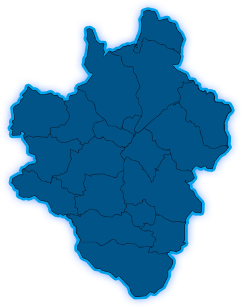

AAA+户数
5664
AAA户数
9244
AA户数
8899
A户数
51977
无信用户数
13533
非信用 15.8%
信用 84.2%
共
19
个
非信用 21.6%
信用 78.4%
共
352
个

AAA+农户：
户
AAA农户：
户
AA农户：
户
A农户：
户
无信用农户：
户
信用等级比例
6.3
%
AAA+
10.3
%
AAA
1
%
AA
58.2
%
A
15.2
%
无信用
新增采集信用农户信息展示
姓名
住址
级别
分数
星级
评级时间
王树生
卢氏县何汤乡北苏村
AAA+
191
5星级
2018-09-05
王树生
卢氏县何汤乡北苏村
AAA+
191
5星级
2018-09-05
王树生
卢氏县何汤乡北苏村
AAA+
191
5星级
2018-09-05
王树生
卢氏县何汤乡北苏村
AAA+
191
5星级
2018-09-05
王树生
卢氏县何汤乡北苏村
AAA+
191
5星级
2018-09-05
AAA+
4269
AAA
7543
AA
6201
A
36692
无信用
10463
AAA+
1402
AAA
1697
AA
2198
A
15285
无信用
3067
马家村
新坪村
高河村
石门村
熊耳村